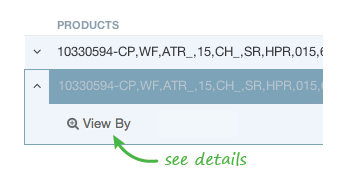

The Scatter Chart characterizes transactions based on how far they are from an established floor and plots them in the appropriate performance quadrant. The floors are compared against the identified root cause adjuster of the opportunity (i.e. High Negotiated Discounts) and the floor for a defined price point (i.e. Pocket Margin or Net Price).
If transactions are below both floors, they appear in the red quadrant. These are the transactions that need the most help.
Bold dots are segment transactions and represent transactions contained in the segment identified for the opportunity.
Faded dots are comparative transactions and represent transactions for the same products that are outside the segment. Comparative transactions provide you with context when comparing the segment transactions.
Review the content available at the top of the Opportunity Detail page for recommended actions to resolve the root cause of the profit leak. In many instances, creating or changing a policy can eliminate or reduce the number of transactions that end up in the red quadrant.
Vendavo Profit Advisor generates floors for decision measures, such as pocket margin and root cause adjustments, based on our industry knowledge and experience.
Each product has a unique floor that is the intersection of its pocket margin and root cause floors. When multiple products are viewed in the same chart, we normalize the floors and plot the transactions based on their difference as a percentage from the floor.
For more specific information on a product, you can drill down on that one product using the View by Product selector. When looking at a single product, the x- and y-axis change to display the actual floors for that product, and plot the transactions based on their actual root cause and price point values.
In addition to using the View by Product selector to view the transaction data for one product, you can change the focus of the chart by selecting to focus on a product in the Contributors section.
You might see cloud-like shapes in the scatter chart for some of your opportunities. This happens when there are so many transactions that displaying them all as dots would make the chart unreadable.
In this case, we display the general shape of the comparative transactions as a cloud, while segment transactions are always dots.
Since segment transactions are always presented as bold dots, there are rare instances when there are too many segment transactions to display in a readable way. Rather than try to present all of them, we choose a representative subset of the segment transactions. Because you want the detail about all the transactions in the opportunity, you can view and export them from the Transactions tab in the Contributors section.